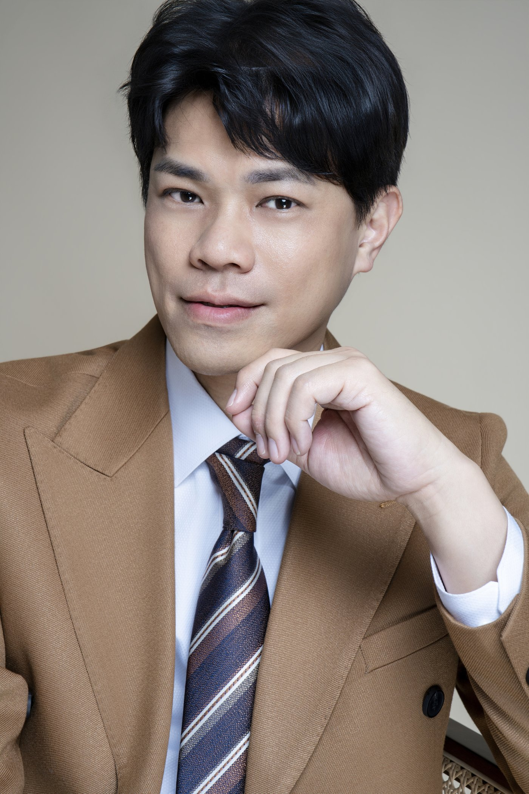

西裝、襯衫與皮外套，讓同一個人在鏡頭前有不同的樣子。許景泰這次在 CHUN.EN 的拍攝，同時準備了形象照與一支自我介紹影片。
許景泰（Jerry）是商戰 CXO 的執行長，也是企業的商業顧問與教練。CXO 官網把這個組織介紹為商務社群與會員俱樂部，成員是企業家、創業者與專業人士。
代表組織，也讓人認識本人
替會員組織的執行長規劃影像，要讓人看見他的角色與份量，也讓人認識他本人。活動介紹、會員交流與合作資料需要哪些畫面，可以在拍攝前一起整理，再決定服裝、表情與構圖。
這一案準備了四種服裝，從西裝、襯衫到皮外套，留下不同的穿著與畫面。之後使用時，再依版位與想呈現的樣子挑選。
四種服裝，搭配不同的畫面
背景有灰色、白色、米色與深綠色，另有一組橘色光的畫面。
駝色雙排釦西裝。搭配條紋領帶，呈現西裝與領帶的正式組合。

米白雙排釦西裝。內搭條紋襯衫，不打領帶，搭配笑容與手勢。

白襯衫。不穿外套，在窗光下的白色沙發上拍坐姿。

黑色皮外套。立領皮外套搭深色針織內搭，在深色背景前拍攝，留下直視鏡頭與帶著笑容的版本。

照片後來用在哪裡？
2026 年 11 月，他的 Facebook 粉絲專頁「許景泰-Jerry粉絲團」，封面與大頭貼用的都是皮外套這組：
| 位置 | 畫面 |
|---|---|
| 粉絲專頁封面 | 深色背景、皮外套，帶著笑容的橫幅 |
| 粉絲專頁大頭貼 | 同一組皮外套，直視鏡頭的版本 |
他自己最喜歡的，也是皮外套這組裡的一張：雙手交握，眼神直接看向鏡頭。
同一套皮外套，用不同表情與構圖，就能分別放進封面與大頭貼。
一支約 69 秒的自我介紹影片
同一天，這一案也拍了一支約 69 秒的形象影片，由許景泰介紹自己、平常的工作，以及 CXO 社群。
影片穿插當天拍照的不同造型，交付時有中文字幕、中英字幕與無字幕三個版本。
照片留下服裝、表情與姿態，影片則留下本人說話的聲音與方式，自我介紹多了一種呈現。
企業主準備形象照與影片，可以先想什麼？
先列出照片或影片會用在哪裡，例如活動介紹、合作提案、講座、媒體與社群，再確認每個地方需要什麼內容。
需要照片時，先看比例、裁切與文字位置，再安排服裝和表情；需要本人開口介紹時，再整理影片要說的重點與拍法。拍攝前把這些需求說清楚，畫面就能安排得更具體。